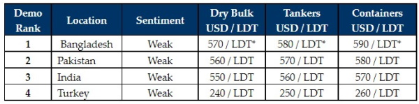

inWeekly Demolition Reports10/10/2022

Sub-continent markets appear to have disappeared back into the ether for another week, as trading markets rebound and candidates for recycling start to dissipate.
In recent weeks, volatile steel plate prices, a constantly deteriorating currency and starved U.S. Dollar credit lines across India, Pakistan and Bangladesh have all led to a near total halt on buying at anywhere near respectable levels.
As such, it is hard to gauge where prices really stand today, with so few Buyers either having the capabilities to open an L/C & perform on any sizeable vessel, and furthermore, the lack of any sort of confidence to offer and maintain any firm levels.
Even in Turkey, the situation remains unrelentingly gloomy, with little to no movement in any positive direction, all while local sentiments remain depressed on the back of a Lira that has been scraping to record-lows by the week and plate prices that remain in the dumps.
Overall, it has been a frustrating period of time for Cash Buyers with any tonnage to sell and it is becoming increasingly fraught to get vessels delivered into a beleaguered recycling market.
The rebound on VLCCs has also just come at the right time, and to see Suezmax and Aframax tankers flying and even a rebound on Cape rates of late has seen most larger LDT vessels bypass the beaches once again as they have yet another chance at squeezing out a few more voyages.
There are also very few small(er) LDT vessels on the buffet and as such, it increasingly looks as though it will be as quiet an end to the year as it has been for the last two quarters. Certainly, it is time again for the recycling markets to get their affairs in order, ahead of an anticipated higher influx of vessels next year.
For week 40 of 2022, GMS demo rankings / pricing for the week are as below.

📄 Download PDF: Ship-recycling-market-insight-week-40-2022-Bypassing-Beaches.pdfSource: GMS,Inc. ,https://www.gmsinc.net/gms_new/index.php/web